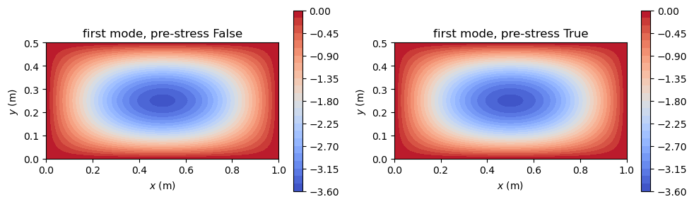

Frequency analysis#
This example computes the natural frequencies and modes of plates, with and without an in-plane pre-stress, and compares them with the literature: an isotropic and a cross-ply plate against the closed-form solution of a simply supported plate with in-plane forces (Leissa, 1969), and an angle-ply plate against the frequencies of Wang (1997). The nine models of panels that the example compares are the plate and cylindrical-shell models of the classical (CLPT), first-order (FSDT) and
third-order (TSDT) shear deformation theories, with a large radius \(r = 10^8\) m for the shells.
The kinetic energy gives the mass matrix \(\boldsymbol{M}\), Shell.calc_kM. For harmonic motion, \(\boldsymbol{c}(t) = \boldsymbol{c}\, e^{i\omega t}\), the equations of motion become the eigenvalue problem
solved with structsolve.freq, which returns the eigenvalues \(\lambda^2\) and the modes. \(\omega_n\) is the natural frequency in rad/s. A pre-stress is included by adding the geometric stiffness matrix to the constitutive one, \(\boldsymbol{K} = \boldsymbol{K}_C + \boldsymbol{K}_G\): compressive stress resultants lower the frequencies, and tensile ones raise them.
[1]:
%matplotlib inline
import numpy as np
import matplotlib.pyplot as plt
from IPython.display import Markdown, display
from structsolve import freq
from panels.shell import Shell
MODELS = ['plate_clpt_donnell', 'cylshell_clpt_donnell',
'cylshell_clpt_sanders', 'plate_fsdt_donnell', 'plate_tsdt_donnell',
'cylshell_fsdt_donnell', 'cylshell_fsdt_sanders',
'cylshell_tsdt_donnell', 'cylshell_tsdt_sanders']
def results_table(rows):
# Markdown table of (quantity, panels, reference, source) rows
out = ['| quantity | panels | reference | relative difference | reference source |',
'|---|---|---|---|---|']
for name, val, ref, src in rows:
out.append('| %s | %.6g | %.6g | %+.2e | %s |'
% (name, val, ref, (val - ref)/abs(ref), src))
display(Markdown('\n'.join(out)))
def natural_frequencies(shell, prestress):
# natural frequencies (rad/s) and modes, with or without K_G
K = shell.calc_kC()
if prestress:
K = K + shell.calc_kG()
eigvals, eigvecs = freq(K, shell.calc_kM(), sparse_solver=True,
silent=True)
return np.sqrt(-eigvals).real, eigvecs
Isotropic plate: closed form with in-plane forces#
For a simply supported isotropic plate with the constant membrane resultants \(N_{xx}\) and \(N_{yy}\), positive in tension, and \(N_{xy} = 0\), the modes \(w = \sin(m\pi x/a)\sin(n\pi y/b)\) satisfy the plate equation exactly, and the frequencies are given by Eq. (10.44) of Leissa (1969, p. 277):
with \(\rho h\) the mass per unit area (Leissa’s \(\rho\)). The lowest value is the first natural frequency; with compressive resultants it is not necessarily the mode \(m = n = 1\) (Leissa, 1969, p. 277). The in-plane inertia does not enter, since the membrane and bending problems of a flat isotropic plate are uncoupled. The plate is the aluminium plate of \(1 \times 0.5\) m and 2 mm used throughout this example.
[2]:
E, nu, h, rho = 70e9, 0.33, 2e-3, 2700.
a, b = 1., 0.5
D = E*h**3/(12*(1 - nu**2))
def omega_closed_form(Nxx, Nyy, nmax=6):
# Leissa (1969), Eq. (10.44), lowest of the modes m, n <= nmax
m, n = np.meshgrid(np.arange(1, nmax + 1), np.arange(1, nmax + 1))
w2 = (D*((m*np.pi/a)**2 + (n*np.pi/b)**2)**2
+ Nxx*(m*np.pi/a)**2 + Nyy*(n*np.pi/b)**2)/(rho*h)
return np.sqrt(w2.min())
rows = []
for Nxx, Nyy in ((0., 0.), (-200., -50.)):
s = Shell(model='plate_clpt_donnell', a=a, b=b, stack=[0.], plyt=h,
laminaprop=(E, nu), rho=rho, m=10, n=10)
s.Nxx, s.Nyy = Nxx, Nyy
omegan, _ = natural_frequencies(s, Nxx != 0 or Nyy != 0)
ref = omega_closed_form(Nxx, Nyy)
print('Nxx = %g, Nyy = %g N/m: panels %.4f rad/s, closed form %.4f rad/s'
% (Nxx, Nyy, omegan[0], ref))
rows.append(('isotropic plate, $N_{xx} = %g$, $N_{yy} = %g$ N/m, $\\omega_1$ (rad/s)'
% (Nxx, Nyy), omegan[0], ref,
'Leissa (1969), Eq. (10.44), p. 277'))
results_table(rows)
Nxx = 0, Nyy = 0 N/m: panels 153.6772 rad/s, closed form 153.6785 rad/s
Nxx = -200, Nyy = -50 N/m: panels 151.2799 rad/s, closed form 151.2812 rad/s
quantity |
panels |
reference |
relative difference |
reference source |
|---|---|---|---|---|
isotropic plate, \(N_{xx} = 0\), \(N_{yy} = 0\) N/m, \(\omega_1\) (rad/s) |
153.677 |
153.678 |
-8.22e-06 |
Leissa (1969), Eq. (10.44), p. 277 |
isotropic plate, \(N_{xx} = -200\), \(N_{yy} = -50\) N/m, \(\omega_1\) (rad/s) |
151.28 |
151.281 |
-8.22e-06 |
Leissa (1969), Eq. (10.44), p. 277 |
Angle-ply plate: comparison with Wang (1997)#
Singha and Ganapathi (2005, Table 1, p. 58) list the first six non-dimensional natural frequencies
of a simply supported square plate with the symmetric angle-ply laminate \([45/-45/45/-45/45]\) of plies of equal thickness, \(a/b = 1\) and \(a/h = 100\), computed with their finite element and with the thin-plate solution of Wang (1997). The ply properties are \(E_L/E_T = 40\), \(G_{LT}/E_T = 0.6\), \(G_{TT}/E_T = 0.5\), \(\nu_{LT} = 0.25\) (Singha and Ganapathi, 2005, p. 58), so \(G_{12} = G_{13} = G_{LT}\) and \(G_{23} = G_{TT}\) in laminaprop. Since
\(\bar{\omega}\) is non-dimensional, \(E_T = 1\) and \(\rho = 1\) are used. Their simply supported edges have \(u = v = w = 0\), as the default boundary conditions of panels.
The bending-twisting coupling terms \(D_{16}\) and \(D_{26}\) of the angle-ply laminate are not zero, so there is no closed-form solution and the convergence in the number of terms is slower than for an orthotropic plate; \(m = n = 15\) terms are used.
[3]:
ET = 1.
lam_singha = (40*ET, ET, 0.25, 0.6*ET, 0.6*ET, 0.5*ET)
a_s = 1.
h_s = a_s/100
# Singha and Ganapathi (2005), Table 1, skew angle 0, SS
WANG = [2.4339, 4.9865, 6.1818, 8.4870, 10.2536, 11.6464]
SINGHA = [2.4343, 4.9854, 6.1823, 8.4827, 10.2464, 11.6432]
omegabar = {}
for model in MODELS:
s = Shell(model=model, a=a_s, b=a_s, r=1.e8, stack=[45, -45, 45, -45, 45],
plyt=h_s/5, laminaprop=lam_singha, rho=1., m=15, n=15)
omegan, _ = natural_frequencies(s, False)
omegabar[model] = omegan[:6]*a_s**2/(np.pi**2*h_s)*np.sqrt(s.rho/ET)
print('%-22s %s' % (model, np.round(omegabar[model], 4)))
print('%-22s %s' % ('Wang (1997)', np.array(WANG)))
print('%-22s %s' % ('Singha and Ganapathi', np.array(SINGHA)))
plate_clpt_donnell [ 2.433 4.9854 6.1786 8.4838 10.2492 11.638 ]
cylshell_clpt_donnell [ 2.433 4.9854 6.1786 8.4838 10.2492 11.638 ]
cylshell_clpt_sanders [ 2.433 4.9854 6.1786 8.4838 10.2492 11.638 ]
plate_fsdt_donnell [ 2.4231 4.9497 6.1191 8.3851 10.1053 11.4336]
plate_tsdt_donnell [ 2.4227 4.9513 6.1191 8.391 10.111 11.4359]
cylshell_fsdt_donnell [ 2.4231 4.9497 6.1191 8.3851 10.1053 11.4336]
cylshell_fsdt_sanders [ 2.4231 4.9497 6.1191 8.3851 10.1053 11.4336]
cylshell_tsdt_donnell [ 2.4227 4.9513 6.1191 8.391 10.111 11.4359]
cylshell_tsdt_sanders [ 2.4227 4.9513 6.1191 8.391 10.111 11.4359]
Wang (1997) [ 2.4339 4.9865 6.1818 8.487 10.2536 11.6464]
Singha and Ganapathi [ 2.4343 4.9854 6.1823 8.4827 10.2464 11.6432]
The first frequency of every model, and the first six of a CLPT and an FSDT model, against the values of Wang (1997):
[4]:
src = 'Wang (1997), in Singha and Ganapathi (2005), Table 1'
rows = []
for model in MODELS:
rows.append(('`%s`, $\\bar{\\omega}_1$' % model, omegabar[model][0],
WANG[0], src))
for model in ['plate_clpt_donnell', 'plate_fsdt_donnell']:
for i in range(1, 6):
rows.append(('`%s`, $\\bar{\\omega}_%d$' % (model, i + 1),
omegabar[model][i], WANG[i], src))
results_table(rows)
quantity |
panels |
reference |
relative difference |
reference source |
|---|---|---|---|---|
|
2.43298 |
2.4339 |
-3.77e-04 |
Wang (1997), in Singha and Ganapathi (2005), Table 1 |
|
2.43298 |
2.4339 |
-3.77e-04 |
Wang (1997), in Singha and Ganapathi (2005), Table 1 |
|
2.43298 |
2.4339 |
-3.77e-04 |
Wang (1997), in Singha and Ganapathi (2005), Table 1 |
|
2.42311 |
2.4339 |
-4.43e-03 |
Wang (1997), in Singha and Ganapathi (2005), Table 1 |
|
2.4227 |
2.4339 |
-4.60e-03 |
Wang (1997), in Singha and Ganapathi (2005), Table 1 |
|
2.42311 |
2.4339 |
-4.43e-03 |
Wang (1997), in Singha and Ganapathi (2005), Table 1 |
|
2.42311 |
2.4339 |
-4.43e-03 |
Wang (1997), in Singha and Ganapathi (2005), Table 1 |
|
2.4227 |
2.4339 |
-4.60e-03 |
Wang (1997), in Singha and Ganapathi (2005), Table 1 |
|
2.4227 |
2.4339 |
-4.60e-03 |
Wang (1997), in Singha and Ganapathi (2005), Table 1 |
|
4.98542 |
4.9865 |
-2.17e-04 |
Wang (1997), in Singha and Ganapathi (2005), Table 1 |
|
6.1786 |
6.1818 |
-5.18e-04 |
Wang (1997), in Singha and Ganapathi (2005), Table 1 |
|
8.48381 |
8.487 |
-3.76e-04 |
Wang (1997), in Singha and Ganapathi (2005), Table 1 |
|
10.2492 |
10.2536 |
-4.34e-04 |
Wang (1997), in Singha and Ganapathi (2005), Table 1 |
|
11.638 |
11.6464 |
-7.21e-04 |
Wang (1997), in Singha and Ganapathi (2005), Table 1 |
|
4.94965 |
4.9865 |
-7.39e-03 |
Wang (1997), in Singha and Ganapathi (2005), Table 1 |
|
6.11906 |
6.1818 |
-1.01e-02 |
Wang (1997), in Singha and Ganapathi (2005), Table 1 |
|
8.38508 |
8.487 |
-1.20e-02 |
Wang (1997), in Singha and Ganapathi (2005), Table 1 |
|
10.1053 |
10.2536 |
-1.45e-02 |
Wang (1997), in Singha and Ganapathi (2005), Table 1 |
|
11.4336 |
11.6464 |
-1.83e-02 |
Wang (1997), in Singha and Ganapathi (2005), Table 1 |
The CLPT models agree with the thin-plate solution of Wang (1997) within about 0.1% for the six modes. The FSDT and TSDT models give frequencies 0.4% (first mode) to 1.8% (sixth mode) lower: the transverse shear flexibility is not negligible at \(a/h = 100\) for this material, with \(E_L/G_{LT} = 67\), and its effect grows with the number of half-waves. Wang’s solution is based on the thin-plate theory and does not include it; the finite element of Singha and Ganapathi (2005), with transverse shear, gives values close to Wang’s.
Cross-ply plate with and without pre-stress#
Leissa (1969, p. 267) states that no results were published for plates with both in-plane forces and orthotropy. The plate equation with in-plane forces, Eq. (10.1) of Leissa (1969, p. 267), is however written for rectangular orthotropy, and for a symmetric cross-ply laminate, with \(\boldsymbol{B} = \boldsymbol{0}\) and \(D_{16} = D_{26} = 0\), the constants of Eq. (9.24) of Leissa (1969, p. 250) are \(D_x = D_{11}\), \(D_y = D_{22}\) and \(D_{xy} = D_{12} + 2D_{66}\). The simply supported modes \(w = \sin(m\pi x/a)\sin(n\pi y/b)\) satisfy Eq. (10.1) exactly, which gives, as Eq. (10.44) for the isotropic plate,
The plate of \(1 \times 0.5\) m has the laminate \([0/90/90/0]\) of carbon/epoxy plies of 0.125 mm, \(E_{11} = 142.5\) GPa, \(E_{22} = 8.7\) GPa, \(\nu_{12} = 0.28\), \(G_{12} = G_{13} = G_{23} = 5.1\) GPa, and density 1300 kg/m³; the pre-stress is \(N_{xx} = -30\) N/m and \(N_{yy} = -5\) N/m, below the buckling load. The plate is thin, \(a/h = 2000\), so the nine models agree. The bending stiffness matrix \(\boldsymbol{D}\) is taken from the laminate of
the Shell object, Shell.lam.
[5]:
lam_cfrp = (142.5e9, 8.7e9, 0.28, 5.1e9, 5.1e9, 5.1e9)
Nxx, Nyy = -30., -5.
def omega_orthotropic(p, Nxx, Nyy, nmodes=3, nmax=12):
# Leissa (1969), Eq. (10.1) with the modes sin(m pi x/a) sin(n pi y/b)
Dm = p.lam.D
h = sum(p.plyts)
m, n = np.meshgrid(np.arange(1, nmax + 1), np.arange(1, nmax + 1))
km, kn = m*np.pi/p.a, n*np.pi/p.b
w2 = (Dm[0, 0]*km**4 + 2*(Dm[0, 1] + 2*Dm[2, 2])*km**2*kn**2
+ Dm[1, 1]*kn**4 + Nxx*km**2 + Nyy*kn**2)/(p.rho*h)
return np.sort(np.sqrt(w2.ravel()))[:nmodes]
rows = []
first_modes = {}
for model in MODELS:
for prestress in (False, True):
p = Shell(model=model, a=1., b=0.5, r=1.e8, stack=[0, 90, 90, 0],
plyt=0.125e-3, rho=1.3e3, m=12, n=12, laminaprop=lam_cfrp)
p.Nxx, p.Nyy = Nxx, Nyy
omegan, eigvecs = natural_frequencies(p, prestress)
ref = omega_orthotropic(p, Nxx if prestress else 0.,
Nyy if prestress else 0.)
print('%-22s pre-stress %-5s: panels %s, closed form %s rad/s'
% (model, prestress, np.round(omegan[:3], 4), np.round(ref, 4)))
rows.append(('`%s`, pre-stress %s, $\\omega_1$ (rad/s)'
% (model, prestress), omegan[0], ref[0],
'Leissa (1969), Eq. (10.1), p. 267'))
if model == 'plate_clpt_donnell':
first_modes[prestress] = (p, eigvecs[:, 0])
print('D16 = %.2e, D26 = %.2e N m, max |B| = %.2e N'
% (p.lam.D[0, 2], p.lam.D[1, 2], np.abs(p.lam.B).max()))
results_table(rows)
plate_clpt_donnell pre-stress False: panels [ 31.517 66.5314 105.0639], closed form [ 31.517 66.5315 105.0641] rad/s
plate_clpt_donnell pre-stress True : panels [15.301 47.9653 96.7894], closed form [15.301 47.9653 96.7896] rad/s
cylshell_clpt_donnell pre-stress False: panels [ 31.517 66.5314 105.0639], closed form [ 31.517 66.5315 105.0641] rad/s
cylshell_clpt_donnell pre-stress True : panels [15.301 47.9653 96.7894], closed form [15.301 47.9653 96.7896] rad/s
cylshell_clpt_sanders pre-stress False: panels [ 31.517 66.5314 105.0639], closed form [ 31.517 66.5315 105.0641] rad/s
cylshell_clpt_sanders pre-stress True : panels [15.301 47.9653 96.7894], closed form [15.301 47.9653 96.7896] rad/s
plate_fsdt_donnell pre-stress False: panels [ 31.5168 66.5306 105.0623], closed form [ 31.517 66.5315 105.0641] rad/s
plate_fsdt_donnell pre-stress True : panels [15.3007 47.9643 96.7877], closed form [15.301 47.9653 96.7896] rad/s
plate_tsdt_donnell pre-stress False: panels [ 31.5169 66.5307 105.0626], closed form [ 31.517 66.5315 105.0641] rad/s
plate_tsdt_donnell pre-stress True : panels [15.3007 47.9643 96.788 ], closed form [15.301 47.9653 96.7896] rad/s
cylshell_fsdt_donnell pre-stress False: panels [ 31.5168 66.5306 105.0623], closed form [ 31.517 66.5315 105.0641] rad/s
cylshell_fsdt_donnell pre-stress True : panels [15.3007 47.9643 96.7877], closed form [15.301 47.9653 96.7896] rad/s
cylshell_fsdt_sanders pre-stress False: panels [ 31.5168 66.5306 105.0623], closed form [ 31.517 66.5315 105.0641] rad/s
cylshell_fsdt_sanders pre-stress True : panels [15.3007 47.9643 96.7877], closed form [15.301 47.9653 96.7896] rad/s
cylshell_tsdt_donnell pre-stress False: panels [ 31.5169 66.5307 105.0626], closed form [ 31.517 66.5315 105.0641] rad/s
cylshell_tsdt_donnell pre-stress True : panels [15.3007 47.9643 96.788 ], closed form [15.301 47.9653 96.7896] rad/s
cylshell_tsdt_sanders pre-stress False: panels [ 31.5169 66.5307 105.0626], closed form [ 31.517 66.5315 105.0641] rad/s
cylshell_tsdt_sanders pre-stress True : panels [15.3007 47.9643 96.788 ], closed form [15.301 47.9653 96.7896] rad/s
D16 = 3.11e-19, D26 = 1.04e-17 N m, max |B| = 2.84e-14 N
quantity |
panels |
reference |
relative difference |
reference source |
|---|---|---|---|---|
|
31.517 |
31.517 |
-5.14e-07 |
Leissa (1969), Eq. (10.1), p. 267 |
|
15.301 |
15.301 |
-5.14e-07 |
Leissa (1969), Eq. (10.1), p. 267 |
|
31.517 |
31.517 |
-5.14e-07 |
Leissa (1969), Eq. (10.1), p. 267 |
|
15.301 |
15.301 |
-5.14e-07 |
Leissa (1969), Eq. (10.1), p. 267 |
|
31.517 |
31.517 |
-5.14e-07 |
Leissa (1969), Eq. (10.1), p. 267 |
|
15.301 |
15.301 |
-5.14e-07 |
Leissa (1969), Eq. (10.1), p. 267 |
|
31.5168 |
31.517 |
-4.70e-06 |
Leissa (1969), Eq. (10.1), p. 267 |
|
15.3007 |
15.301 |
-1.83e-05 |
Leissa (1969), Eq. (10.1), p. 267 |
|
31.5169 |
31.517 |
-4.13e-06 |
Leissa (1969), Eq. (10.1), p. 267 |
|
15.3007 |
15.301 |
-1.59e-05 |
Leissa (1969), Eq. (10.1), p. 267 |
|
31.5168 |
31.517 |
-4.70e-06 |
Leissa (1969), Eq. (10.1), p. 267 |
|
15.3007 |
15.301 |
-1.83e-05 |
Leissa (1969), Eq. (10.1), p. 267 |
|
31.5168 |
31.517 |
-4.70e-06 |
Leissa (1969), Eq. (10.1), p. 267 |
|
15.3007 |
15.301 |
-1.83e-05 |
Leissa (1969), Eq. (10.1), p. 267 |
|
31.5169 |
31.517 |
-4.13e-06 |
Leissa (1969), Eq. (10.1), p. 267 |
|
15.3007 |
15.301 |
-1.59e-05 |
Leissa (1969), Eq. (10.1), p. 267 |
|
31.5169 |
31.517 |
-4.13e-06 |
Leissa (1969), Eq. (10.1), p. 267 |
|
15.3007 |
15.301 |
-1.59e-05 |
Leissa (1969), Eq. (10.1), p. 267 |
The pre-stress lowers the first frequency by about half, and the nine models agree with the closed form within \(10^{-4}\): the CLPT models within \(10^{-6}\), the precision of the Ritz approximation, and the shear deformation theories within \(2 \times 10^{-5}\), since at \(a/h = 2000\) the transverse shear hardly matters.
The first mode of the plate model, without and with the pre-stress:
[6]:
fig, axes = plt.subplots(1, 2, figsize=(10, 3))
for ax, (prestress, (p, c)) in zip(axes, first_modes.items()):
mesh, fields = p.uvw(np.real(c), gridx=101, gridy=61)
cf = ax.contourf(mesh['Xs'], mesh['Ys'], fields['w'], levels=30,
cmap='coolwarm')
fig.colorbar(cf, ax=ax)
ax.set_title('first mode, pre-stress %s' % prestress)
ax.set_xlabel('$x$ (m)')
ax.set_ylabel('$y$ (m)')
ax.set_aspect('equal')
fig.tight_layout()
plt.show()

References#
Leissa, “Vibration of plates”. NASA SP-160, National Aeronautics and Space Administration, Washington, D.C., 1969. https://ntrs.nasa.gov/citations/19700009156.
Singha and M. Ganapathi, “A parametric study on supersonic flutter behavior of laminated composite skew flat panels”. Composite Structures, 69(1):55-63, 2005. https://doi.org/10.1016/j.compstruct.2004.04.018.
Wang, “Vibration of thin skew fibre reinforced composite laminates”. Journal of Sound and Vibration, 201(3):335-352, 1997. https://doi.org/10.1006/jsvi.1996.0745.